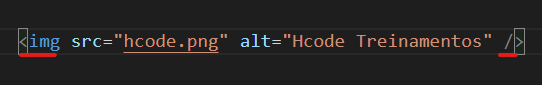
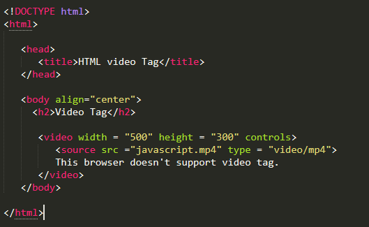
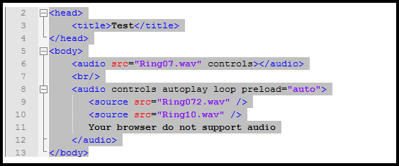

<link rel="stylesheet" href="../css/style_multimidia.css">
<article>
    <h2>TAGS PARA MULTIMÍDIA</h2>
    
        <p>As tags de multimídia servem para incluir imagens, vídeos, áudios, iframes e outros tipos de conteúdo multimídia.</p>
    <ul>
        <li><b>IMG: </b>Essa tag não necessita de fechamento, serve para incluir uma imagem ao seu texto. A partir dessa tag, utilizamos o atributo src=” ” onde deve ser digitado o local em que a imagem se encontra. Também é muito utilizado em conjunto com o atributo alt para definir o texto alternativo da imagem, como no exemplo da imagem acima.</li>
        <br/>
        <li><b>VIDEO: </b>Essa tag serve para indicar a inserção de um vídeo. Com isso, devemos colocar alguns atributos dentro da tag para poder ativar o controle, a principal dela é o controls. Posteriormente, incluímos a tag Source com os atributos src e type, onde receberão o local em que está o vídeo e o tipo do vídeo. É recomendado utilizar mais de um tipo de source do mesmo vídeo, para garantir maior possibilidade de compatibilidade com o navegador. Finalmente, podemos incluir uma mensagem que será renderizada apenas se o navegador do usuário não suportar a tag video. Exemplo na imagem abaixo:</li>
        <br/>
        
        <br/>
        <li><b>AUDIO: </b>Funciona da mesma forma que a atg de video, utilizando a tag Source dentro dela. Exemplo na imagem abaixo:</li>
        <br/>
        
    </ul>
</article>
